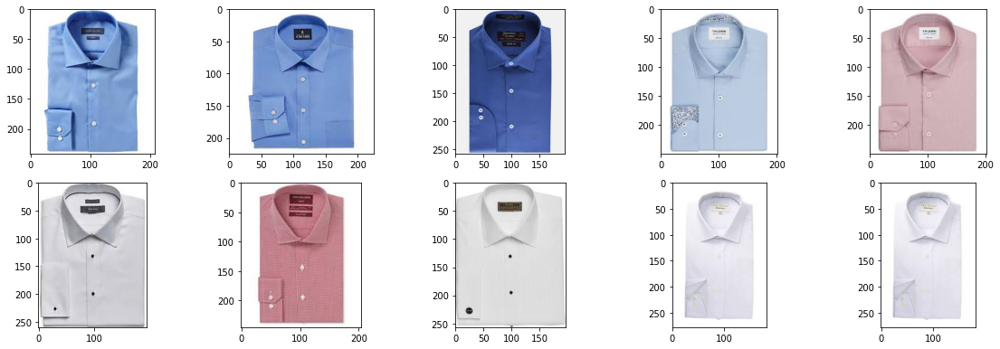

Similar Product Recommender system using Deep Learning for an online e-commerce store¶
A tutorial on building a recommender that will allow users to select a specific type of shirt and search for similar pattern of shirts from the inventory

Import libraries required for file operations¶
import os
import pickle
from glob import glob
# import basic numerical libraries
import numpy as np
import pandas as pd
# import keras libraries for image recognition
from keras.applications import VGG16
from keras.applications.vgg16 import preprocess_input
from keras.preprocessing import image as kimage
Data preparation¶
#hide-output
# download and unzip shirts folder from the directory
!wget https://raw.githubusercontent.com/sparsh-ai/rec-data-public/master/shirts.zip
!unzip shirts.zip
# Create a dictionary of shirts for feeding to the image recognition model
shirts_dict = dict()
for shirt in glob('shirts/*.jpg'): # load all shirts
img = kimage.load_img(shirt, target_size=(224, 224)) # VGG accepts images in 224 X 224 pixels
img = preprocess_input(np.expand_dims(kimage.img_to_array(img), axis=0)) # so some preprocessing
id = shirt.split('/')[-1].split('.')[0]
shirts_dict[id] = img # map image & shirt id
#hide-input
no_of_shirts = len(shirts_dict.keys())
print('Number of shirts = {}'.format(no_of_shirts))
Number of shirts = 2908

Model training¶
# Train on the VGG Model
model = VGG16(include_top=False, weights='imagenet')
shirts_matrix = np.zeros([no_of_shirts, 25088]) # initialize the matrix with zeros
for i, (id, img) in enumerate(shirts_dict.items()):
shirts_matrix[i, :] = model.predict(img).ravel() # flatten the matrix
Downloading data from https://storage.googleapis.com/tensorflow/keras-applications/vgg16/vgg16_weights_tf_dim_ordering_tf_kernels_notop.h5
58892288/58889256 [==============================] - 0s 0us/step
model.summary()
Model: "vgg16"
_________________________________________________________________
Layer (type) Output Shape Param #
=================================================================
input_1 (InputLayer) [(None, None, None, 3)] 0
_________________________________________________________________
block1_conv1 (Conv2D) (None, None, None, 64) 1792
_________________________________________________________________
block1_conv2 (Conv2D) (None, None, None, 64) 36928
_________________________________________________________________
block1_pool (MaxPooling2D) (None, None, None, 64) 0
_________________________________________________________________
block2_conv1 (Conv2D) (None, None, None, 128) 73856
_________________________________________________________________
block2_conv2 (Conv2D) (None, None, None, 128) 147584
_________________________________________________________________
block2_pool (MaxPooling2D) (None, None, None, 128) 0
_________________________________________________________________
block3_conv1 (Conv2D) (None, None, None, 256) 295168
_________________________________________________________________
block3_conv2 (Conv2D) (None, None, None, 256) 590080
_________________________________________________________________
block3_conv3 (Conv2D) (None, None, None, 256) 590080
_________________________________________________________________
block3_pool (MaxPooling2D) (None, None, None, 256) 0
_________________________________________________________________
block4_conv1 (Conv2D) (None, None, None, 512) 1180160
_________________________________________________________________
block4_conv2 (Conv2D) (None, None, None, 512) 2359808
_________________________________________________________________
block4_conv3 (Conv2D) (None, None, None, 512) 2359808
_________________________________________________________________
block4_pool (MaxPooling2D) (None, None, None, 512) 0
_________________________________________________________________
block5_conv1 (Conv2D) (None, None, None, 512) 2359808
_________________________________________________________________
block5_conv2 (Conv2D) (None, None, None, 512) 2359808
_________________________________________________________________
block5_conv3 (Conv2D) (None, None, None, 512) 2359808
_________________________________________________________________
block5_pool (MaxPooling2D) (None, None, None, 512) 0
=================================================================
Total params: 14,714,688
Trainable params: 14,714,688
Non-trainable params: 0
_________________________________________________________________

Inference pipeline¶
#hide
# Create a corelation between shirts
dot_product = shirts_matrix.dot(shirts_matrix.T)
norms = np.array([np.sqrt(np.diagonal(dot_product))])
similarity = dot_product / (norms * norms.T)
print(similarity.shape)
(2908, 2908)
#hide
type(similarity)
numpy.ndarray
# create a cross reference matrix with shirts and matrix
matrix_id_to_shirt_id = dict()
shirt_id_to_matrix_id = dict()
for i, (id, img) in enumerate(shirts_dict.items()):
matrix_id_to_shirt_id[i] = id
shirt_id_to_matrix_id[id] = i
#hide
type(matrix_id_to_shirt_id)
dict

##Finding top 10 similar shirts
Display the sample shirt¶
# Display the sample shirt
from IPython.display import Image
Image('shirts/1015.jpg')
#hide
# evaluate on shirt "1015"
target_shirt_id = '1015'
target_id = shirt_id_to_matrix_id[target_shirt_id]
# Sort 10 shirts based on their closest corelation
closest_ids = np.argsort(similarity[target_id, :])[::-1][0:10]
closest_shirts = [matrix_id_to_shirt_id[matrix_id] for matrix_id in closest_ids]
closest_shirts
['1015',
'1308',
'1187',
'2554',
'2420',
'2526',
'1174',
'2197',
'2545',
'1290']
Print images of top-10 similar shirts¶
#collapse-input
import glob
import matplotlib.pyplot as plt
import matplotlib.image as mpimg
%matplotlib inline
images = []
for shirt in closest_shirts:
shirt = 'shirts/'+shirt+'.jpg'
for img_path in glob.glob(shirt):
images.append(mpimg.imread(img_path))
plt.figure(figsize=(20,10))
columns = 5
for i, image in enumerate(images):
plt.subplot(len(images) / columns + 1, columns, i + 1)
plt.imshow(image)

Model persistence¶
#hide-output
from sklearn.externals import joblib
joblib.dump(similarity, 'similarity.pkl')
joblib.dump(shirt_id_to_matrix_id, 'shirt_id_to_matrix_id.pkl')
joblib.dump(matrix_id_to_shirt_id, 'matrix_id_to_shirt_id.pkl')
# load the model from disk
loaded_model = joblib.load('similarity.pkl')
#hide
type(loaded_model)
numpy.ndarray
# Sort 10 shirts based on their closest corelation
closest_ids = np.argsort(loaded_model[target_id, :])[::-1][0:10]
closest_shirts = [matrix_id_to_shirt_id[matrix_id] for matrix_id in closest_ids]
closest_shirts
['1015',
'1308',
'1187',
'2554',
'2420',
'2526',
'1174',
'2197',
'2545',
'1290']